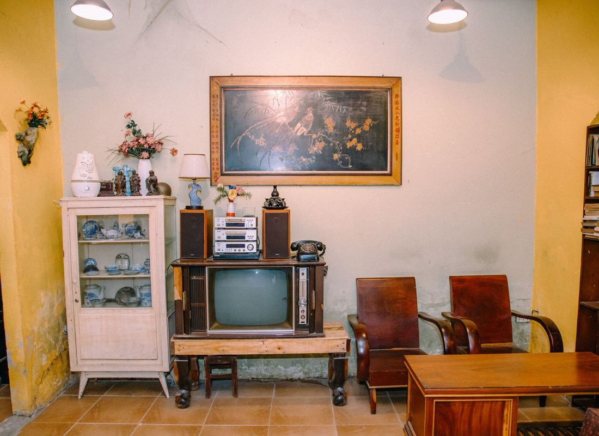

Start an estate cleanout by securing the documents and valuables before anything else moves, then work one room at a time sorting into keep, sell, donate, and haul. Do not throw away a single piece of paper until the executor has been through it. Most families need two to four weekends for the sorting, and a single day with a crew for everything left over.
There is no good version of this job. There is only a version that goes a little easier on everyone, and that comes down to doing things in the right order. Here is the order we have watched work in North Texas homes.
Before you touch anything
Confirm who has authority. In Texas, the executor named in the will, or an administrator appointed by the court, is the person with the legal right to distribute or dispose of the estate's property. If probate has not been sorted out yet, moving items out can create real problems between family members. We are a hauling company, not attorneys, so this is the one part worth a call to the estate's attorney before you start.
Secure the documents first. Before a single box moves, collect and set aside anything official:
- Will, trust documents, and any handwritten amendments
- Deeds, vehicle titles, and mortgage paperwork
- Insurance policies, especially life insurance
- Bank, brokerage, and retirement statements
- Tax returns for the last several years
- Social Security card, birth and marriage certificates, military discharge papers
- Bills and account statements, which tell you what subscriptions still need cancelling
Put all of it in one labeled box that leaves the house with the executor that day.
Change the locks and call the insurer. An empty house with keys floating among neighbors, cleaners, and old contractors is a risk. Many homeowner policies also change coverage once a house sits vacant, and that is worth knowing before it sits empty for two months.
Photograph every room before it moves. Walk the house with your phone. It settles disagreements later about what was where, and it is a record for the estate.
Where valuables actually hide
People who lived through lean years did not keep everything in a bank. Before any box gets called trash, check:
- Inside books, especially bibles and encyclopedia sets. Cash and documents get tucked into pages.
- Freezers and pantries. Envelopes in the freezer are common enough that estate professionals check every time.
- Coat pockets, purses, and shoe boxes in the back of closets.
- Under drawer liners and taped to the underside of drawers.
- Behind picture frames and inside the paper backing.
- Medicine cabinets and dresser tops for jewelry that got set down and forgotten.
- The garage. Older American-made hand tools and shop equipment are frequently the most valuable thing in the house, and the thing most likely to get hauled off by accident. Our garage cleanout checklist walks that room specifically, and the attic is the other room where things get put away and forgotten for decades.
- Anything with a serial number. Firearms have their own handling and transfer rules and should never end up in a donation pile. Set them aside for the executor.
The four-box method, one room at a time
Trying to sort a whole house at once is how families stall out for six months. Work one room, finish it, close the door. If it helps to know in advance who actually shows up on the day, that is written out separately.
Box 1: Keep
Items family members have actually claimed, in writing, with names on them. "Someone might want it" is not a claim. That phrase is how a parent's garage ends up in your garage.
Box 2: Sell
Realistically: jewelry, firearms handled properly, tools, real wood furniture, coins, quality rugs, signed art, and working appliances that are not too old. For a house with real antiques or collections, an estate sale professional should walk it before anybody starts hauling.
Box 3: Donate
Clean, working, undamaged items. Donation centers turn away anything stained, torn, cracked, or heavily worn, and nearly all of them refuse mattresses. Be honest about condition, because a rejected donation load just becomes a second trip. The Dallas Area Habitat ReStore takes furniture, appliances, cabinets, and building materials, and Habitat's national ReStore directory will find the location closest to the house.
Box 4: Haul
Everything else. This is the biggest pile in almost every house, and it is the one nobody wants to look at.
Two rules keep the process moving. First, one person makes the final call in each room, agreed on in advance. Second, set a timer. Estate sorting expands to fill whatever time you give it, and the memories are in the photographs, not in the fourth set of dishes.
You do not have to do the last part yourself. Once the sorting is done, what is left is the hauling: furniture, mattresses, appliances, the attic, the shed, the garage. That is one day with a crew, and you get a number you approve before anything is lifted. Ask us for a free quote when you are ready.
What to do with what is left
- Paper you are unsure about. Shred anything with an account number, a Social Security number, or a signature. Many North Texas cities and banks hold free community shred events, which beats feeding a home shredder for eleven hours.
- Medications. Do not flush them. Most police departments and many pharmacies around DFW have permanent drop boxes.
- Paint, chemicals, motor oil, propane tanks, pesticides. These cannot go out with the trash, and no removal company can legally haul them. Your city almost certainly runs a household chemical collection program for residents. Dallas has its Home Chemical Collection Center, Plano has household chemical collection, and if the house is somewhere else the TCEQ guide for Texans will point you to the nearest program. Ask us and we will find the right page for yours.
- Electronics. Wipe or physically destroy any hard drive before it leaves the house. Old computers, TVs, and printers are recyclable, and plenty of cities hold e-waste days. McKinney, for one, takes them year round through its household hazardous waste and e-waste program.
- Food. Clear the fridge and pantry early. This is the thing that gets forgotten when a house sits, and the thing you will regret forgetting.
If the family is keeping the house rather than selling it, the order changes and some of the pressure comes off. That version of the job is covered in clearing out a house you inherited and are keeping.
How we handle an estate cleanout
Hero's started out helping neighbors clear out garages, and Nash runs it himself now. One of the first jobs that grew this business was an estate in McKinney, and we have done a lot of them since.
- A walkthrough and a number first. You approve it before anything is lifted, and the quote is the bill. Disposal is part of it, so there is no surprise line at the end.
- You do not have to be there. Plenty of families cannot walk back through that house one more time. Approve by phone and we send before-and-after photos when it is done.
- Nothing marked leaves. Tape, sticky notes, a closed-off room, whatever system you use. We follow it, and we ask before anything ambiguous goes on the trailer.
- Donation first. Usable furniture and appliances go to local donation partners rather than a landfill. Families tell us that part matters. Our guide to where to donate furniture in DFW covers the options if you want to handle some of it yourself.
- Our own crews. Not gig labor hired that morning off an app. That is the whole reason we can send people into a family's home.
- We sweep up. The house is left broom clean and ready to list.
When the house is not just full but packed, the work is paced differently, and our guide to hoarder house junk removal walks through how that goes room by room. If the estate also includes a rented unit somewhere, clearing out a storage unit covers that side.
Full details are on our estate cleanouts page, and if it is one heavy piece standing between you and done, furniture removal covers that. Old refrigerators, washers, and water heaters are handled on the appliance removal page. When you want a number, tell us what is left and we will come look.
Frequently asked questions
How long does an estate cleanout take?
Sorting is the slow part, and most families spend two to four weekends on it. The removal itself is usually one day, sometimes two for a full house with a packed garage and attic.
How is an estate cleanout quoted?
We walk the house with you first, then give you a firm number before anything is touched, with disposal included in it. We keep it fair and we would rather tell you the truth than pad a job. Ask on the contact page for a free quote.
Do I have to be at the house?
No. Many families approve the quote over the phone and get photos when the job is finished.
Can you help decide what is worth selling?
We are haulers, not appraisers, and we will not pretend otherwise. For a house with real antiques or collections, an estate sale professional should walk it before we do.
What will you not take?
Household hazardous waste: paint, motor oil, gasoline, propane tanks, chemicals, and asbestos. Your city's household chemical collection center takes those for free, and we will point you to the right page.
If the parent is still living and the move is into care rather than after a loss, the order of operations changes. Downsizing a parent into assisted living covers that version, including what fits in the new room and what the family should handle before any crew is booked.
There is no rush on our end. When the sorting is done and you want the rest gone, send a few photos or ask for a walkthrough, and you will have a number the same day.